पाच दिवस कसे गेले हे कळलेच नाही आणि पाहता पाहता आमच्या या सुंदर दुबई–अबुधाबी प्रवासाचा शेवटचा दिवस उजाडला. हे दिवस इतके आरामदायी, आनंददायी आणि लक्झरी अनुभवांनी भरलेले होते की वेळ अक्षरशः उडून गेला. दुबईचे तापमान खूपच जास्त होते; तरीही आमचा प्रवास सुंदर, आरामशीर गाड्यांमधून होत असल्यामुळे उकाड्याचा फारसा त्रास जाणवला नाही.
माझ्यासाठी मात्र या प्रवासाला एक वेगळीच भावनिक पार्श्वभूमी होती. आईच्या जाण्याने माझ्या मनावर फार मोठे दुःख कोसळले आहे. अजूनही त्या दुःखातून पूर्णपणे सावरता आलेले नाही. आईला विसरणे माझ्यासाठी शक्यच नाही. तिची आठवण माझ्या मनात सदैव राहणार आहे. पण माझी एक सवय आहे—जेव्हा मनावर दुःखाचे ओझे जास्त होते, तेव्हा मी बाहेर पडते, पर्यटन करते आणि नवीन ठिकाणे पाहते. निसर्ग, प्रवास आणि बदललेले वातावरण माझ्या मनाला थोडी मोकळीक देतात; जणू हे संपूर्ण विश्वच मला पुन्हा नव्याने जगण्याची ताकद देते.
दुःख काही संपले नाही; पण या प्रवासामुळे मनाचा थोडासा बदल झाला, विचारांना मोकळीक मिळाली आणि मनावरचा ताण काही काळ हलका झाला. त्यामुळे हा प्रवास माझ्यासाठी केवळ पर्यटन नव्हता, तर स्वतःला पुन्हा सावरण्याचा एक छोटासा प्रयत्नही होता.
अबुधाबीच्या दिशेने – शांत, विशाल आणि देखणे शहर
सकाळी साडेदहा वाजता आम्हाला गाडी घ्यायला आली आणि आम्ही अबुधाबीच्या दिशेने निघालो. दुबईहून अबुधाबीकडे जाताना रस्त्यांची रुंदी, स्वच्छता, शिस्त आणि आजूबाजूचा मोकळेपणा पुन्हा एकदा मनात भरला. अबुधाबी मला विशेष आवडले. तुलनेने कमी गर्दी, प्रशस्त रस्ते, आधुनिक इमारती आणि नीटनेटके शहररूप यामुळे शहरात एक वेगळीच शांतता जाणवत होती.
दुबईप्रमाणेच अबुधाबीतही रस्त्यावर दुचाकींची वर्दळ फारशी दिसत नाही; अधूनमधून प्रामुख्याने डिलिव्हरीसाठी दुचाकी दिसतात. मोठमोठ्या इमारती, रुंद रस्ते, हिरवळ आणि स्वच्छ परिसर यामुळे या शहराचे नियोजन विशेष लक्षात राहिले.
अबुधाबीतील भव्य Emirates Palace समोर माझा अविस्मरणीय क्षण
Emirates Palace – राजेशाही वैभवाची झलक
अबुधाबीत पोहोचल्यानंतर आम्ही Emirates Palace परिसर पाहिला. भव्य वास्तू, विस्तीर्ण प्रांगणे, पामची झाडे, कारंजे आणि राजेशाही स्थापत्य यामुळे संपूर्ण परिसर एखाद्या राजवाड्यासारखा भासत होता. Emirates Palace हे अबुधाबीतील प्रसिद्ध लक्झरी हॉटेल आहे. लोकवाणीमध्ये त्याला अनेकदा ‘Seven-Star Hotel’ असे म्हटले जाते; अधिकृत हॉटेल वर्गीकरण मात्र पाच-तारांकित लक्झरी हॉटेलचे आहे.
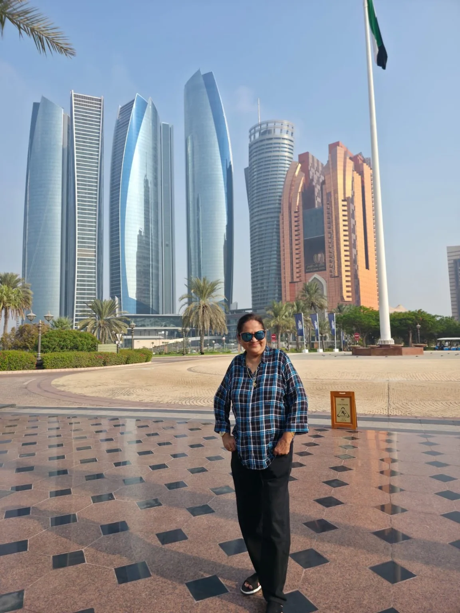
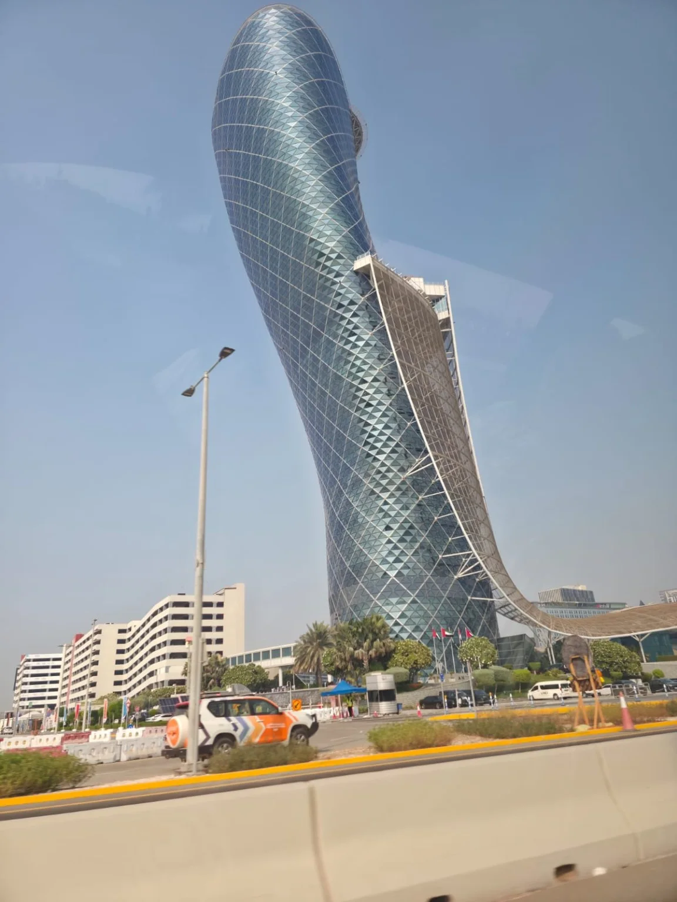
Sheikh Zayed Grand Mosque – पांढऱ्या संगमरवरी सौंदर्याचा अविस्मरणीय अनुभव
यानंतर आम्ही Sheikh Zayed Grand Mosque कडे निघालो. अबुधाबीच्या या भव्य मशिदीचे दर्शन माझ्यासाठी या संपूर्ण प्रवासातील अत्यंत संस्मरणीय अनुभव ठरले. पांढऱ्या संगमरवरी वास्तूवर पडणारा सूर्यप्रकाश, निळे आकाश, असंख्य घुमट, उंच मिनार आणि पाण्यात पडणारी त्यांची प्रतिबिंबे—हे दृश्य शब्दांत पूर्णपणे मांडणे कठीण आहे.
मशिदीच्या वास्तुशिल्पात कमानी, नाजूक कोरीवकाम, फुलांची नक्षी, संगमरवरी फरशी आणि सोन्याचे अलंकरण यांचा अतिशय सुंदर मिलाफ दिसतो. प्रत्येक कोपरा जणू बारकाईने कलाकुसर करून सजवलेला आहे. आत प्रवेश केल्यानंतरची शांतता आणि विशालता मनाला वेगळाच अनुभव देत होती.
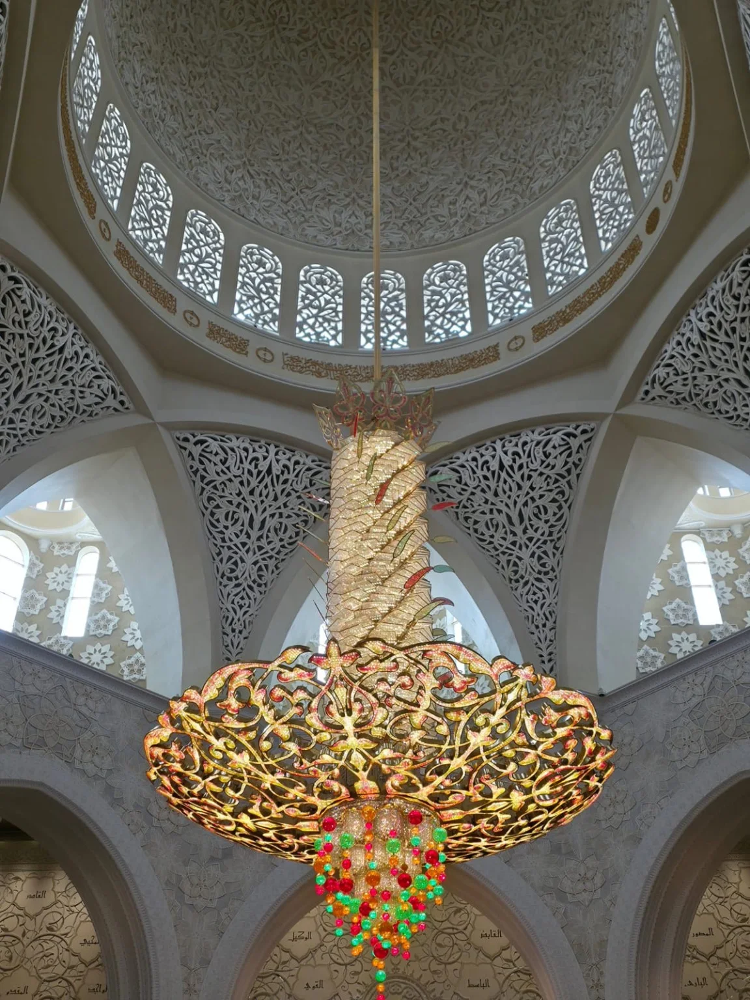
मशिदीतील भव्य झुंबर विशेष लक्ष वेधून घेत होते. त्याच्या सोनसळी रचनेत आणि रंगीत क्रिस्टल्समध्ये प्रकाश पडताच संपूर्ण सभागृह अधिकच तेजस्वी दिसत होते. मुख्य झुंबर जगातील सर्वात मोठ्या झुंबरांपैकी एक म्हणून प्रसिद्ध आहे आणि त्याची Guinness World Records मधील नोंदही विशेष उल्लेखनीय आहे.

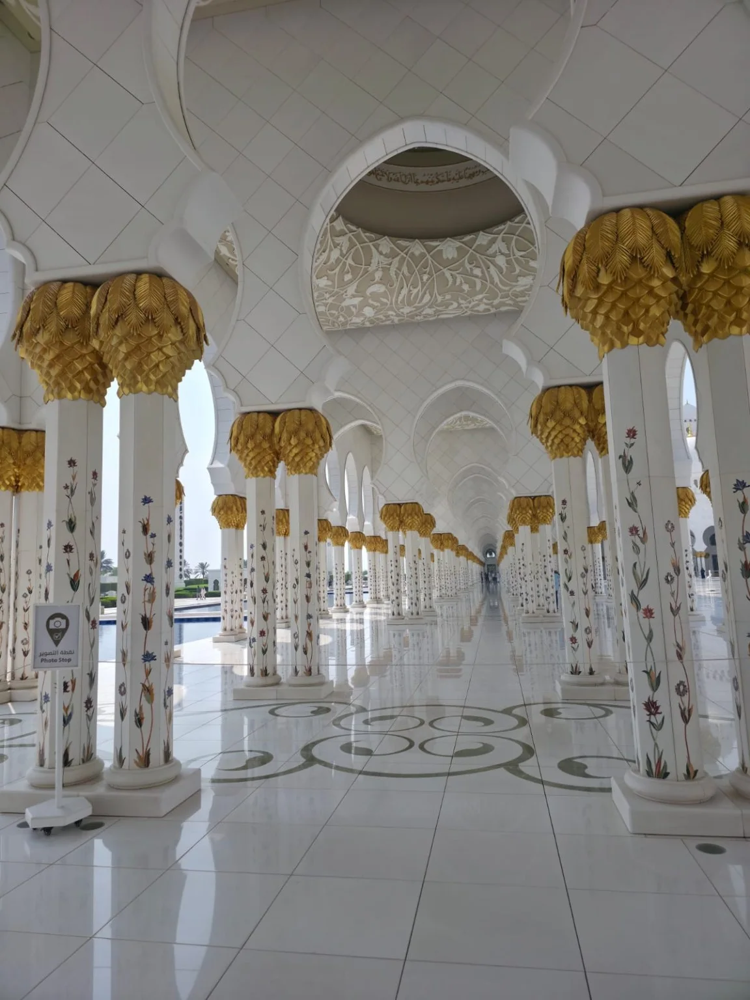
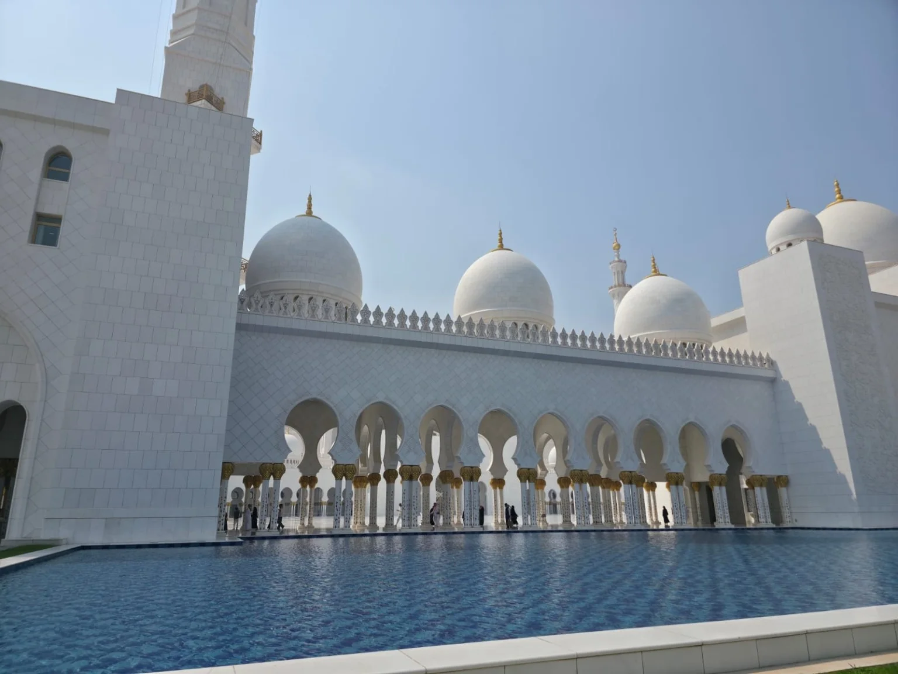
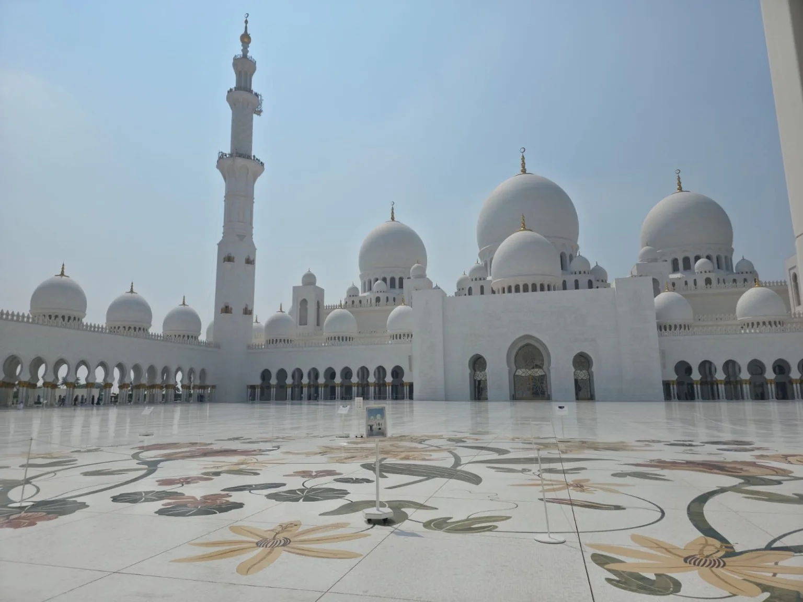
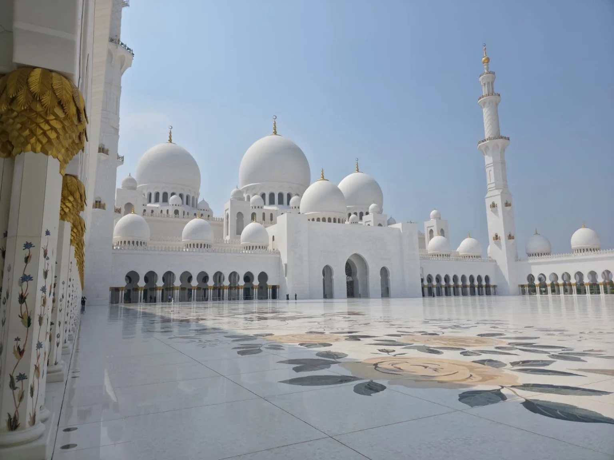
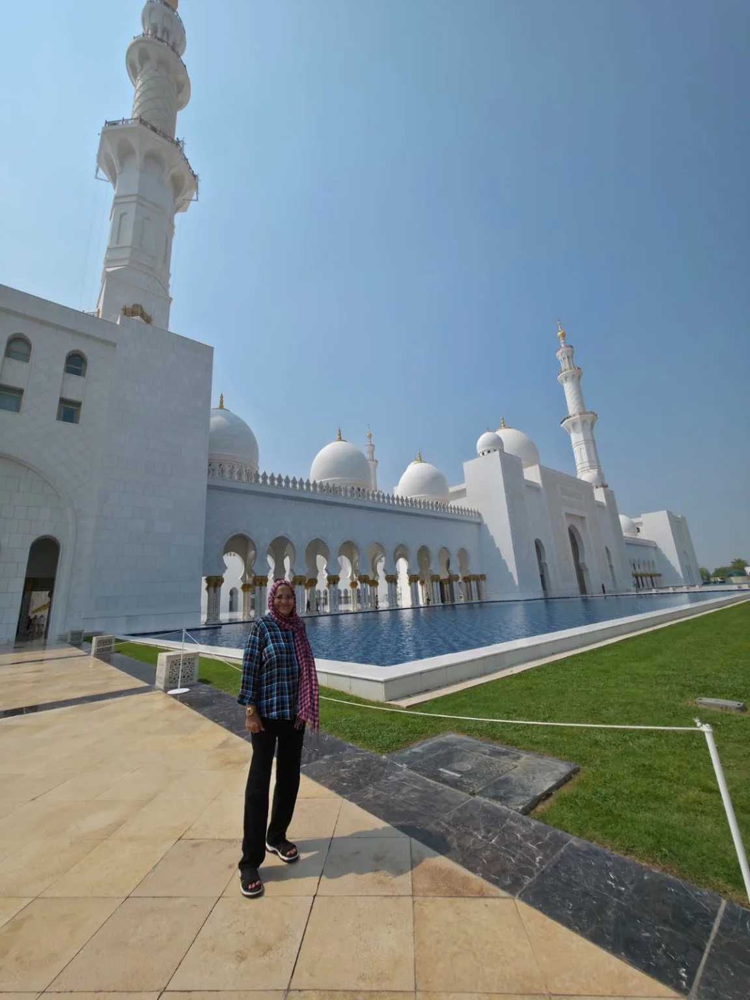
मशिदीतील वास्तुशिल्प – सौंदर्य, शांतता आणि कलाकुसर
या मशिदीचे वैशिष्ट्य म्हणजे तिच्या वास्तुशिल्पात दिसणारी सूक्ष्मता. पांढऱ्या संगमरवरी भिंतींवर फुलांची नक्षी, स्तंभांवरील रंगीत फुलांचे अलंकरण, सोनसळी पानांसारखी सजावट, विशाल कमानी आणि आरशासारखी चमकणारी फरशी—सगळेच डोळ्यांना थक्क करणारे होते. बाहेरील विशाल प्रांगणात केलेली फुलांची संगमरवरी जडणघडण तर अप्रतिम आहे.
मशिदीतील सजावटीकडे पाहताना मला एक गोष्ट विशेष जाणवली—इथे भव्यता आणि शांतता यांचा सुंदर समतोल साधलेला आहे. इतकी मोठी वास्तू असूनही वातावरणात एक विलक्षण शांतपणा जाणवत होता.
Ferrari World – वेग आणि रोमांचाची दुनिया
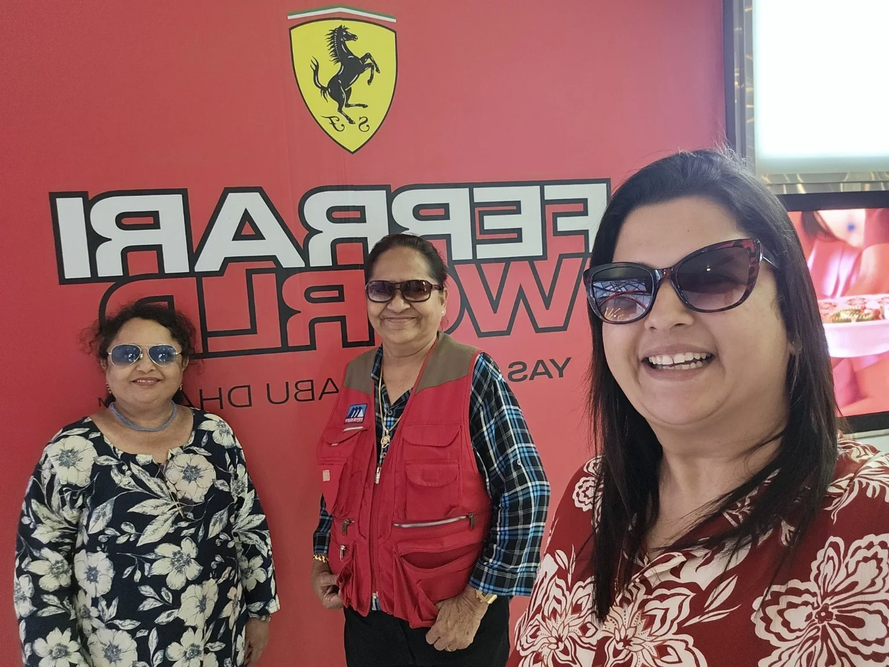
यानंतर आम्ही प्रसिद्ध Ferrari World परिसरात गेलो. Ferrari या नावाशी जोडलेला वेग, आधुनिक तंत्रज्ञान आणि मोटरस्पोर्ट्सचा उत्साह येथे अनुभवायला मिळतो. भव्य Ferrari Worldची वास्तू आणि तिची वैशिष्ट्यपूर्ण ओळख दूरूनच लक्ष वेधून घेते. आम्ही तेथे फोटो काढले आणि या वेगळ्या अनुभवाच्या आठवणी मनात जपून ठेवल्या.
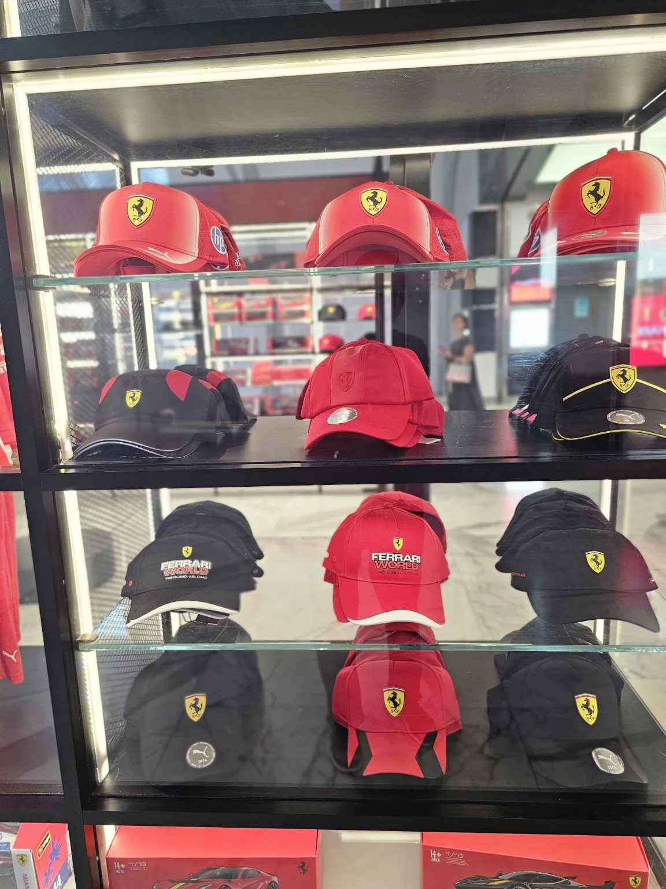
बाजार, खरेदी आणि छोटासा विरंगुळा
त्यानंतर आम्ही ‘वन टू टेन’ म्हणून ओळखल्या जाणाऱ्या मार्केट/मॉल परिसरात गेलो. आपल्या पुण्यातील मार्केट यार्डची आठवण करून देणारा बाजाराचा भाग आणि त्यासोबतचा मॉल असा हा वेगळा अनुभव होता. मला आवडलेल्या काही वस्तू तेथून घेतल्या. दिवसभर फिरल्यानंतर McDonald's मध्ये दुपारचे जेवण घेतले आणि थोडा आराम केला.
परतीची वेळ – अबुधाबी विमानतळावर भावूक निरोप
संध्याकाळी ठीक सहा वाजता आम्ही अबुधाबी विमानतळावर पोहोचलो. पाच दिवसांच्या या सुंदर प्रवासाला आता निरोप देण्याची वेळ आली होती. विमानतळावर पोहोचताना मनात आनंदही होता आणि या सुंदर दिवसांचा शेवट होत असल्याची हुरहूरही होती. आम्ही एकमेकांना भावनिक निरोप दिला आणि या प्रवासातील प्रत्येक आठवण मनात जपून ठेवली.
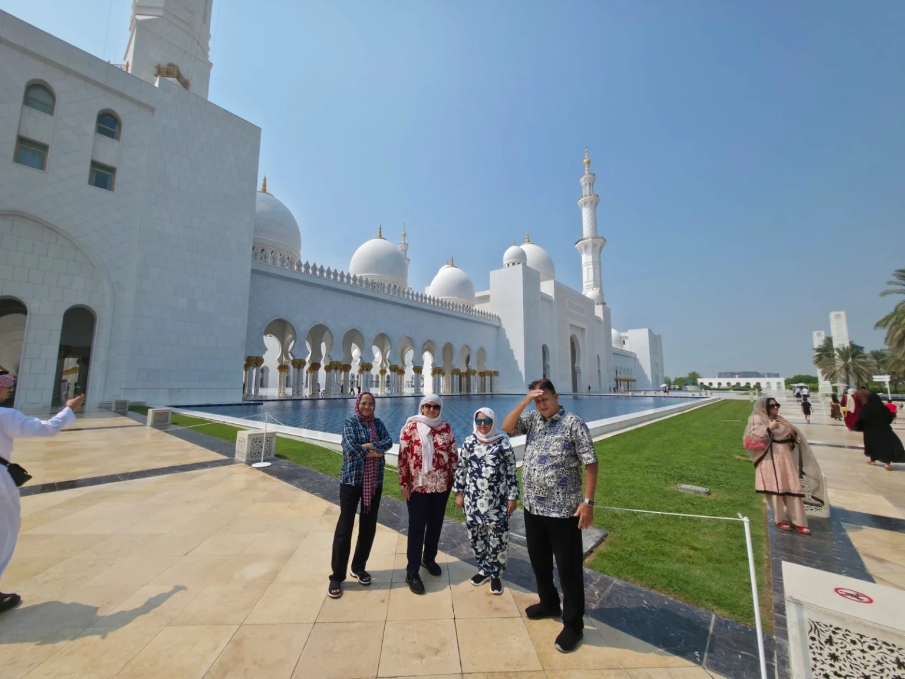
उशिराचे विमान आणि पुण्याकडे परतीचा प्रवास
आमचे विमान रात्री दहा वाजता होते; मात्र काही कारणास्तव विमानाला सुमारे दोन तास उशीर झाला. त्यामुळे प्रतीक्षेचा वेळ वाढला. विमानात बसल्यानंतरही रनवेवर सुमारे दीड तास थांबावे लागले. त्यामुळे एकूण प्रवास थोडा लांबला; पण मनात मात्र गेल्या काही दिवसांच्या सुंदर आठवणींचीच उजळणी सुरू होती.
अखेरीस आम्ही सुखरूप पुण्यात पोहोचलो आणि सकाळी सुमारे नऊ वाजता प्रथमेश अपार्टमेंटमध्ये पोहोचल्यानंतर या अविस्मरणीय प्रवासाची सांगता झाली. शरीराने थकवा जाणवत होता; पण मन मात्र नव्या आठवणींनी समृद्ध झाले होते.
एक सुंदर प्रवास… आणि मनात कायम राहणाऱ्या आठवणी
हा प्रवास माझ्यासाठी केवळ दुबई आणि अबुधाबी पाहण्याचा नव्हता. आईच्या जाण्यानंतर मनावर आलेल्या दुःखातून काही काळ बाहेर पडण्याचा, स्वतःला वेळ देण्याचा आणि जगण्याकडे पुन्हा थोड्या वेगळ्या नजरेने पाहण्याचा हा प्रयत्न होता. आईची जागा कोणीही घेऊ शकत नाही आणि तिचे दुःख कधीच पूर्णपणे कमी होणार नाही; पण या प्रवासाने मनाला थोडी मोकळीक दिली, नवीन ऊर्जा दिली आणि पुढे चालत राहण्याची ताकद दिली.
दुबईच्या आधुनिकतेपासून अबुधाबीच्या शांत भव्यतेपर्यंत, उंच इमारतींपासून संगमरवरी मशिदीच्या अद्भुत सौंदर्यापर्यंत, आरामदायी गाड्यांपासून विमानतळावरील शेवटच्या निरोपापर्यंत—प्रत्येक क्षण माझ्या स्मरणात कायमचा कोरला गेला आहे.
खूप खूप धन्यवाद, दुबई आणि अबुधाबी!
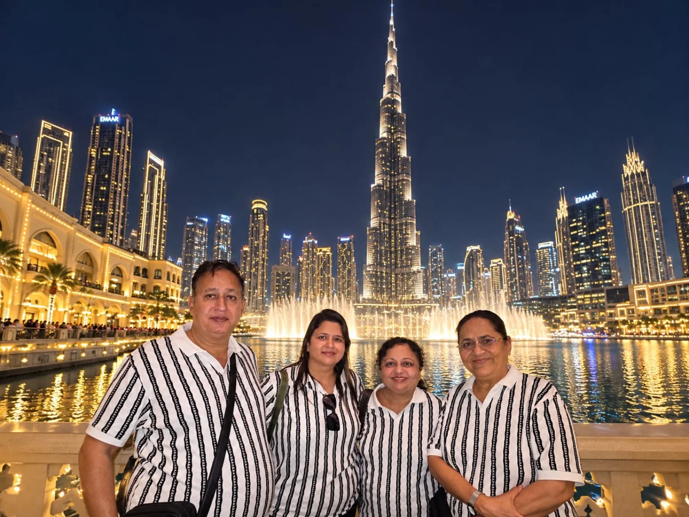
तुमच्या सुंदर वास्तू, स्वच्छ रस्ते, शिस्तबद्ध जीवनशैली आणि अविस्मरणीय अनुभवांच्या आठवणी मी सदैव मनात जपून ठेवेन.
फायनल बाय-बाय अबुधाबी
अबुधाबीच्या इंटरनॅशनल एअरपोर्टवर निरोप घेण्यापूर्वी मी मुद्दाम हा फोटो काढला. या सुंदर प्रवासाच्या आठवणी मनात साठवून अबुधाबीला मनापासून ‘बाय-बाय’ म्हणत मी पुढच्या प्रवासाला निघाले.
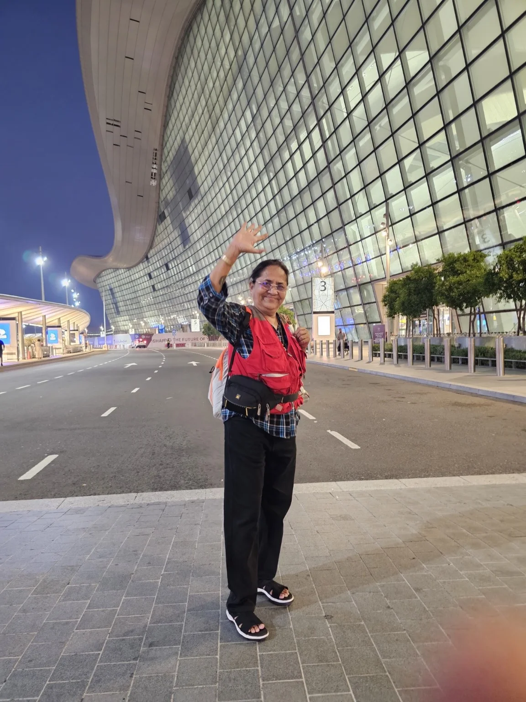